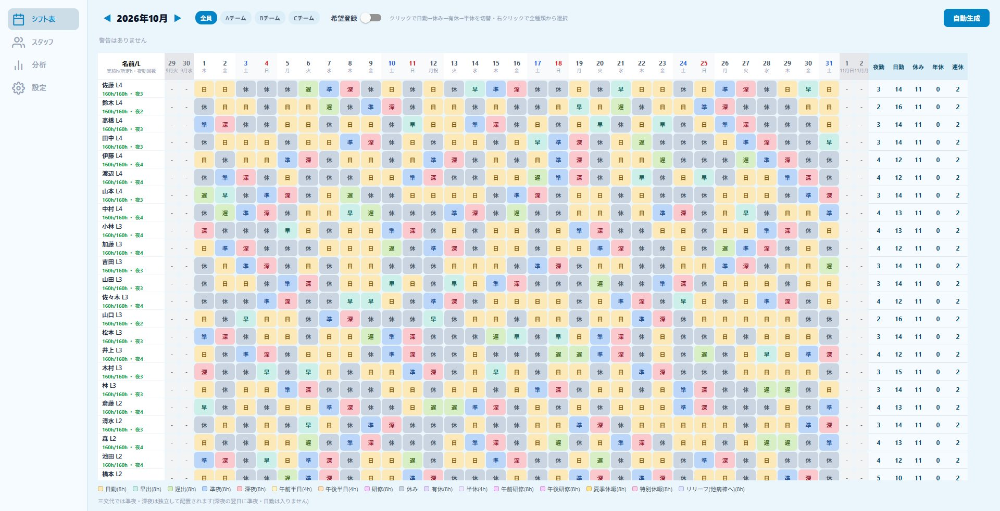
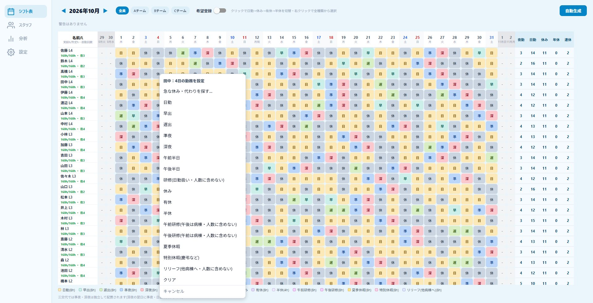
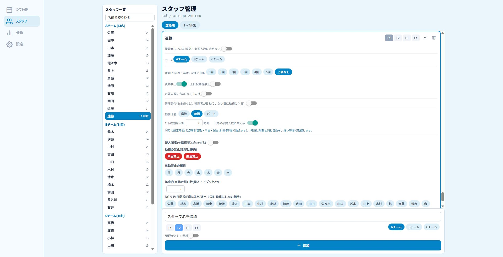
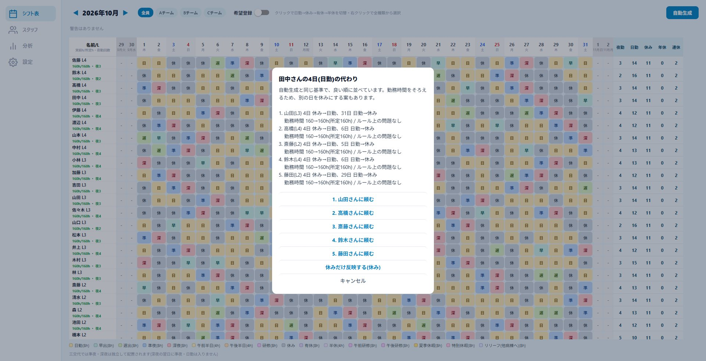
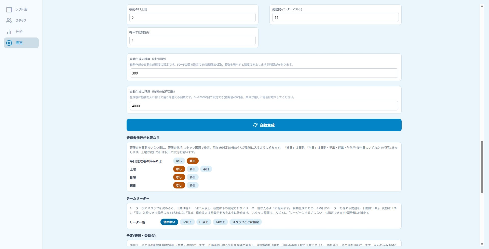

ShifNoa(シフノア)は、看護師長(管理者)のための勤務表(シフト表)作成ソフトです。夜勤・日勤の割り振り、勤務の間隔、夜勤の連続、職員どうしの組み合わせ、希望休・有給の希望を守りながら、1か月分の勤務表を自動で作ります。急な欠勤のときは、代わりに入れる人の候補も探せます。職員名や勤務表は、お使いのパソコンの中だけに保存されます(アカウント登録は不要です)。最初の3か月は無料で、カードの登録なしで始められます。
iPhone / iPad 版をお使いの方は、iOS版のサポートページをご覧ください。このページは、パソコン(Windows)にインストールして使う版の案内です。
ダウンロード・インストール
ダウンロードした ShifNoa-Setup-○.○.○.exe を、ダブルクリックしてください。質問は出ず、そのままインストールが終わります。
- 動作環境: Windows 10 / 11(64ビット)
- 管理者権限は不要です。お使いのユーザーだけにインストールされ、デスクトップとスタートメニューにアイコンができます。
- ブラウザではなく、専用のアプリとして動きます。職員名や勤務表は、このパソコンの中だけに保存されます。
- アップデート: 起動時と、起動中は6時間ごとに新しい版があるかを確認します。見つかると自動でダウンロードされ、「今すぐ再起動 / 後で」をお聞きします。
アンインストールは、Windowsの「設定」→「アプリ」から行えます。アンインストールしても、職員・勤務表のデータは消えません(入れ直せばそのまま使えます)。データも完全に消したいときは、アンインストールのあとで、エクスプローラーのアドレス欄に %APPDATA%\ShifNoa と入力して開き、そのフォルダを削除してください(削除すると元に戻せません。必要なデータは、先にバックアップしてください)。
料金とライセンス
月額550円(税込)。最初の3か月間は無料です。無料期間は、カードの登録なしで始められます。無料期間が終わるまでにお支払い方法を登録しなかった場合は、自動的にご利用が停止し、料金はかかりません。
お申し込みから使い始めるまで
- アプリの設定タブ →「月額プラン・ライセンス」の「3か月無料で始める」を押します。ブラウザで決済のページ(Stripe)が開きます。
- 案内に沿ってお申し込みを済ませると(決済画面では、メールアドレス・お名前・ご住所の入力が必要です。無料期間中はカード情報の入力は不要です)、完了のページにライセンスキー(例: SN-XXXX-XXXX-XXXX-XXXX-XXXX)が表示されます。
- アプリの「ライセンスキー・施設コードをお持ちの方」の欄にキーを入力して「登録」を押すと、自動生成が使えるようになります。
- キーは必ずメモ(コピー)してください。無料期間中は請求書が届かないため、完了のページを閉じる前に控えておくのが確実です。有料になったあとは、Stripe から届く請求書・領収書にも記載されます。
- 解約・お支払い方法の変更: アプリの「解約・お支払い方法の変更」から、Stripe のページが開きます。いつでも手続きできます。
- お支払い情報の扱い: カード情報やメールアドレスは、決済サービス(Stripe)だけが取り扱います。ShifNoa のサーバーには保存されません。
ライセンスの確認について
アプリは、1日に1回程度、ライセンスキーだけをサーバーに送って、有効かどうかを確認します。職員名や勤務表などのデータは送りません。インターネットに接続できない間も、14日間はそのまま使えます。
はじめかた(7ステップ)
- インストールして起動し、ライセンスキー(または施設コード)を登録します。
- 設定タブで、病棟・チーム、勤務体制(三交代/二交代)、各勤務の必要人数を決めます。
- スタッフタブで、職員の名前・レベル(L1〜L4)・チーム・夜勤上限などを登録します。画面左の「スタッフ一覧」から名前を選ぶと、その人の設定へすぐ移動できます。
- 時短・パート、管理者代行、新人とコーチなど、必要な職員はスタッフタブで設定します。研修や委員会の日程は、設定タブの「予定」に登録します。
- シフト表タブで「希望登録」をONにして、休みなどの希望を入れます(マスを右クリックすると、種類を選べます)。
- 「自動生成」を押すと、条件を満たす勤務表が作られます。
- 赤枠や警告を見ながら、マスをクリックまたは右クリックして微調整し、設定画面から Excel / PDF に出力します。データはバックアップも取っておくと安心です。

マスの操作
- クリック: 「日勤→休み→有休→半休」と切り替わります(希望登録中は、希望が切り替わります)。
- 右クリック: メニューが開き、早出・遅出・準夜・深夜・半日勤務・研修・特別休暇・リリーフなど、すべての勤務から選べます。メニューは Esc キーか、外側のクリックで閉じます。
- 日付の見出しを右クリック: その日の警告(人数不足など)の理由が表示されます。

Windows版の機能
時短・パート
職員ごとに、勤務形態(常勤/時短/パート)と1日の勤務時間を設定。パートは「週の日数」「曜日固定」「月の時間」から選べます。日勤の必要人数に数えるかも選べます。
研修・委員会
日付を指定するほか、「毎月第3木曜日」「毎週」のような繰り返しも登録できます。研修は終日・午前・午後に対応(半日は残りを病棟で勤務)。本人の希望と重なった日は希望を優先して知らせます。
夏季休暇・特別休暇
勤務時間に数える休暇です(有休と同じ扱い)。慶弔などにお使いください。
新人とコーチ・プリセプター
新人が夜勤に入る日は、コーチ・プリセプターもできるだけ同じ夜勤になるよう組みます(努力目標)。そろわなかった日は一覧で確認できます。
管理者代行
主任などを代行に設定すると、管理者が日勤にいない日に、代行が1人入るように組みます。平日・土曜(半日も可)・日曜・祝日ごとに、代行が必要かを決められます。
チームリーダー
リーダー役を決めると、日勤は各チームに1人以上のリーダーが入るように組み、務める人の回数もそろえます。シフト表には「TL」の印が付きます。
急な休みの代わりを探す
マスを右クリックして「急な休み・代わりを探す」を選ぶと、自動生成と同じ基準で、代わりに入れる人を良い順に提案します。勤務時間をそろえる案や、起きる問題(連続勤務・インターバルなど)も表示します。
リリーフ
他の病棟から応援に来てもらう人数を、日ごと・勤務ごとに入力できます(表の下の「応援」の行)。自分の病棟の職員が他の病棟へ応援に行く日は「リリーフ(他病棟へ)」を入れると、勤務時間に数え、病棟の人数には数えません。
Excel・PDFの出力
色・罫線つきの Excel(.xlsx)と PDF に、A4横1枚で出力できます。チームごとの並び、個人ごとの集計、日ごとの人数、凡例が入ります。
バックアップ
全病棟のデータをファイルに書き出し・読み込みできます。パスワードでの暗号化は任意です。別のパソコンへのお引っ越しにも使えます。



よくある質問
インストールしようとすると警告が出て進めません
「WindowsによってPCが保護されました」の画面では、「詳細情報」を押すと「実行」のボタンが出ます。ボタンが出ない場合は、パソコンの管理者(病院の情報システムなど)が、署名のないアプリの実行を禁止している可能性があります。ダウンロードしたファイルを右クリック →「プロパティ」→「ブロックの解除」にチェックを入れてから、もう一度お試しください。
「自動生成」のボタンが押せません
ライセンスキー(または施設コード)が登録されていないか、有効でなくなっています。設定タブの「月額プラン・ライセンス」の表示を確認してください。解約した場合や、無料期間が終わってお支払い方法が登録されていない場合は、自動生成だけが使えなくなります。すでにある勤務表の閲覧・手入力・出力・バックアップは、引き続き使えます。
「このコードは使えません」と表示されます
キーの入力間違いがないか確認してください(英字の「O」と数字の「0」、英字の「I」「L」と数字の「1」は、同じ文字として扱います)。キーはコピーして貼り付けると確実です。それでも使えない場合は、解約によって無効になっている可能性があります。Stripe から届いた請求書の内容もご確認ください。
インターネットにつながっていなくても使えますか
はい。勤務表の作成や編集は、インターネットなしで使えます。ライセンスの確認だけ、1日に1回程度つながる必要がありますが、つながらない間も14日間は使えます。14日を過ぎると、インターネットに接続して確認できるまで、自動生成が使えなくなります。
画面に「パソコンの日付が確認時より前になっています」と出ます
パソコンの日付を戻して使い続けることを防ぐための表示です。日付と時刻が正しいか確認し、インターネットに接続して「今すぐ確認する」を押してください。
データはどこに保存されますか。別のパソコンに移せますか
職員・設定・勤務表は、このパソコンの中のアプリ専用の保管場所だけに保存され、外部には送られません。パソコンの故障や買い替えに備えて、設定画面の「バックアップ」から、定期的にファイルに書き出してください。別のパソコンでは、アプリをインストールして、そのファイルを「バックアップから読み込む」で読み込むと、同じ状態に戻せます。
バックアップのパスワードを忘れました
パスワードで暗号化したバックアップは、パスワードがないと開けません(ShifNoa 側でも解除できません)。パスワードは、バックアップとは別の場所に控えておいてください。
アプリが通信する相手を知りたい
アプリが通信するのは、次の2つだけです。(1) ライセンスの確認(ライセンスキーのみを送ります)、(2) アプリの新しい版の確認(GitHub)。職員名・勤務表などのデータは、どこにも送りません。お申し込みと解約のページは、お使いのブラウザで開きます。
研修や委員会の日程はどう入れますか
設定タブの「予定(研修・委員会)」で「予定を追加」を押します。種類(研修/委員会)、日付の決め方(日付を指定・毎月第N曜日・毎週)、参加する職員を選びます。登録した予定は、次の「自動生成」から反映されます。1回だけ個別に入れたい場合は、マスを右クリックして「研修」などを選ぶこともできます。
時短・パートの人は、日勤の人数に数えますか
スタッフ画面の「日勤の必要人数に数える」で、人ごとに選べます。数えない設定にすると、その人は必要人数に含まれず、人数を満たすための勤務としては組まれません。
管理者代行は、どんなときに入りますか
設定タブの「管理者代行が必要な日」で、平日(管理者が休みの日)・土曜・日曜・祝日ごとに、代行が必要かどうかを決めます。初期設定は「平日の管理者が休みの日だけ」です。土曜は「半日」にすると、日勤のほか、半日勤務の人が入っても代行とみなします。必要な日に代行が入れなかったときは、その日が警告の対象になります。
「新人と指導者の夜勤が違う日」と出ます
新人が夜勤の日に、コーチ・プリセプターを同じ夜勤にできなかった日です。必要人数・勤務時間・夜勤回数のバランスなどを優先するため、そろわない日が出ることがあります(努力目標です)。押すと、その日の一覧が表示されます。
急な休みが出たとき、代わりの人はどう探しますか
休むことになった人の勤務のマスを右クリックして「急な休み・代わりを探す…」を選び、休みの種類(休み・有休・特別休暇)を選びます。代わりに入れる人が良い順に表示されるので、頼みたい人を押すと、その場で反映されます。反映後は、設定画面の「変更履歴」から元に戻せます。
「条件未達の日」や赤い枠が出ます
必要人数やレベル条件を満たせていない日、またはルール違反(連続勤務の上限超過、勤務間インターバル不足、NGペアの同時勤務など)があるという意味です。日付の見出しを右クリックすると理由が表示されます。職員数に対して必要人数が多すぎないか確認し、設定画面で「自動生成の精度」を増やしてから、もう一度生成してください。
自動生成をやり直したら、手で直した内容が消えました
自動生成は勤務表を作り直します。残したい内容は、「希望登録」で入れておくと優先されます。元に戻したいときは、設定画面の最下部「変更履歴」から、元に戻したい時点を選んでください。
iPhone / iPad の ShifNoa とデータを共有できますか
いいえ。iOS 版とは別のアプリで、データは共有されません(iOS 版のデータもそれぞれの端末の中だけにあります)。iOS 版と Windows 版の月額プランも別々です。
お問い合わせ
上記で解決しない場合は、次の内容を添えてご連絡ください。
- Windows のバージョン(10 / 11)と、インストーラーのファイル名(ShifNoa-Setup-○.○.○.exe の数字)
- 困っている画面と、操作の手順
- 可能であれば画面のスクリーンショット
職員の名前など、個人が分かる情報は、メールに書かないでください。スクリーンショットを送るときも、名前の部分を隠してください。